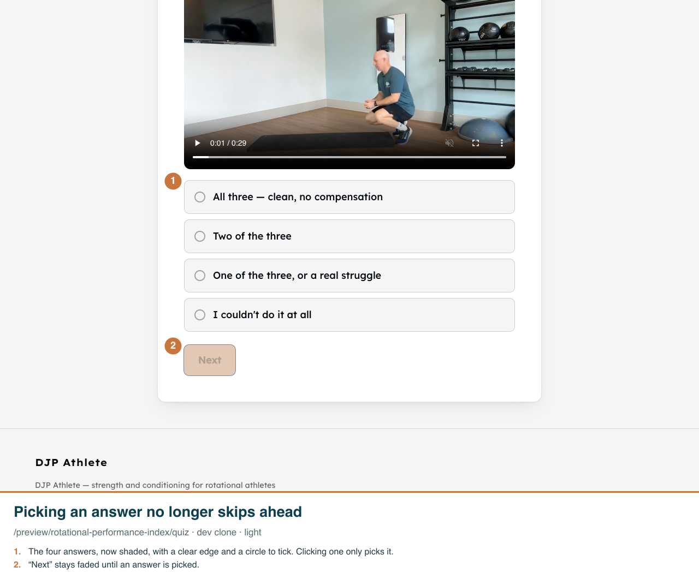
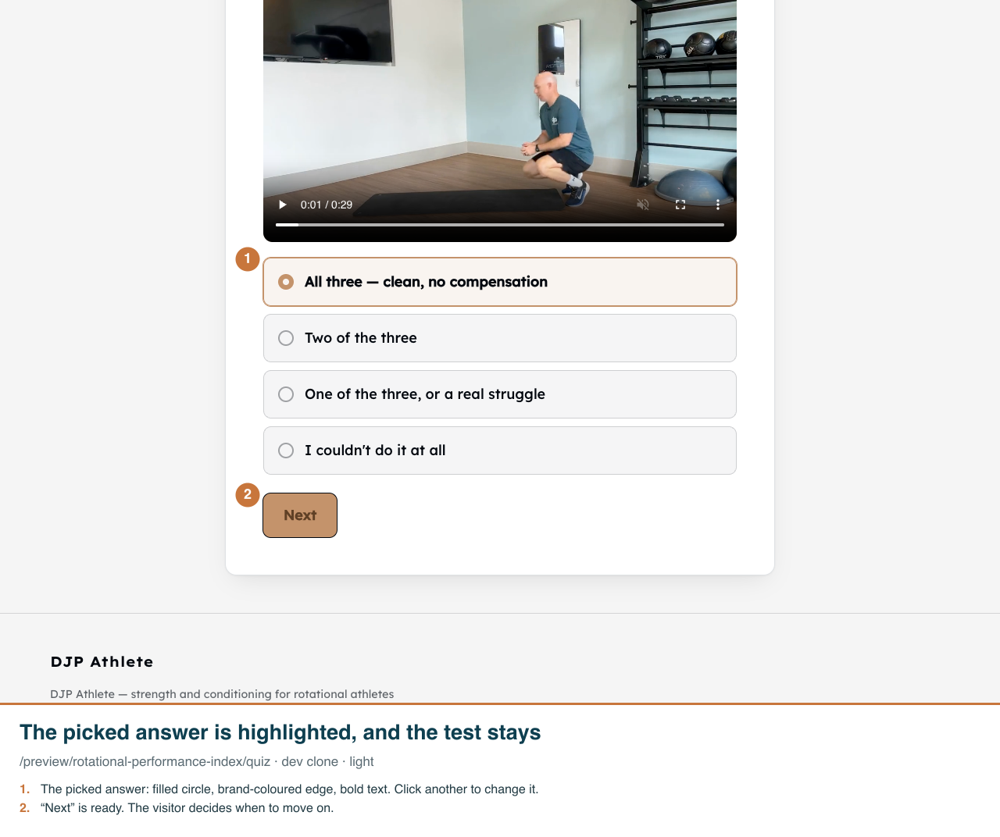
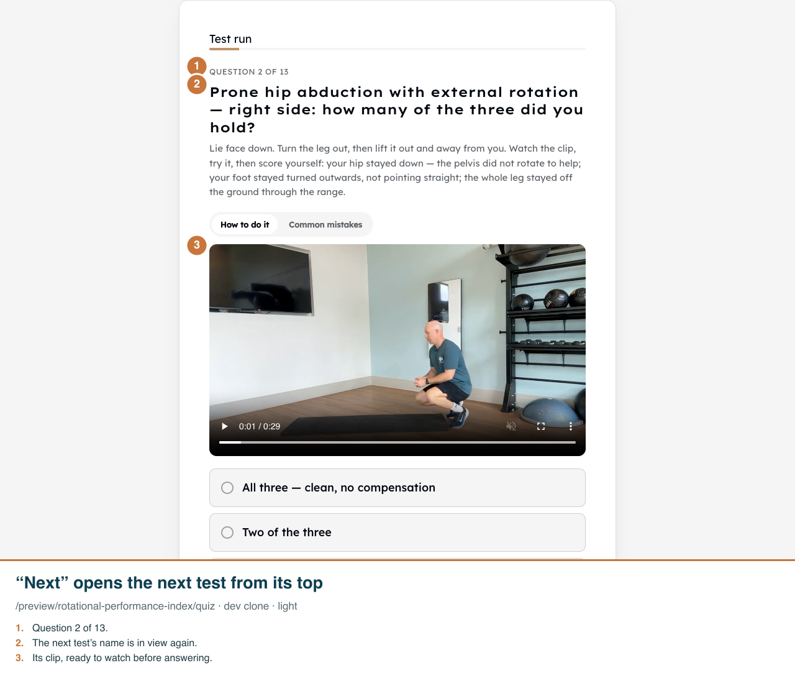
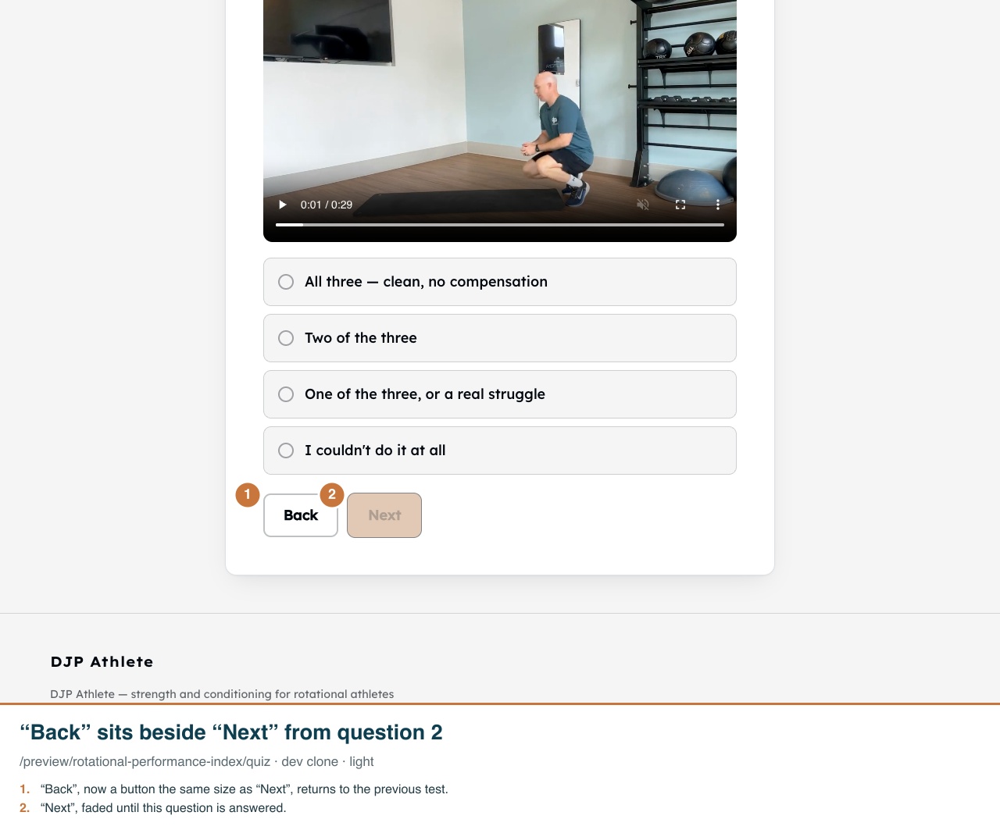

Real app on the dev clone, a /preview/rotational-performance-index test run (nothing saved). Desktop 1280 wide; phone 390 wide at 2x. Funnel pages have no dark mode.
1. The first test, scrolled down to the answers. Nothing is picked yet, so “Next” is faded and does nothing.

2. After a click on the top answer, the same test is still on screen. The answer is highlighted and “Next” is ready.

3. After “Next”, the page scrolls back up by itself. The visitor sees the new test’s name and clip, not just its answers.

4. From the second question on, “Back” returns to the previous one with its answer still picked. Question 1 has no Back, since nothing comes before it.

5. On a phone, “Next” sits right under the answers, beside “Back” from the second question on.